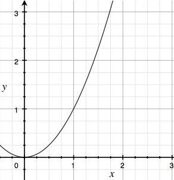

Animator
其是Android3.0之后加入的作用于对象属性的动画,Animator是所有属性动画的基类，其下有ValueAnimator,AnimatorSet,由ValueAnimator再拓展出ObjectAnimator,TimeAnimator
其整体结构图
ValueAnimator
为作用对象提供简单的能够计算动画时间和值得时间引擎，它运行在自定义的Handler里面以确保所有的属性改变都会在UI线程。主要API:
这些方法里面都是进行值得初始化
都是重新封装转化成PropertyValuesHolder，这是封装动画属性和值得对象，之后会详细介绍
设置估值器，最后也是由PropertyValuesHolder保存
开始动画的逻辑其实很简单，主要是判断动画是否需要反转。最终动画的更新交给AnimationHandler
AnimationHandler
处理所有运行中的动画的定时脉冲，这个机制能确保所有的动画都运行在UI线程，其使用Choreograhper(用于调整动画输入和绘制的时机)来执行周期的回调
流程图
插值器
插值器是描述动画变化的频率。其主要方法是
类关系图:
系统已经为开发者准备了一些默认的插值器，我们来简单看下这些插值器的算法
LinearInterpolator(线性插值器)
AccelerateDecelerateInterpolator(加减速插值器)
其特性是在动画开始和结束阶段变化缓慢，中间阶段变化迅速
AccelerateInterpolator(加速插值器)

其特点是动画变化速度一直加快，有个加速因子，默认为1。
AnticipateInterpolator
AnticipateOvershootInterpolator

还有很多别的插值器。这里就不多加赘述了。只要将相应的算法写入getInterpolation中即可
使用的地方
TypeEvaluator(估值器)
根据当前的动画频率，起始值，结束值计算当前值
ArgbEvaluator
算法是线性函数，主要因子fraction来自插值器的计算, y= a + kx
IntEvaluator
估值器主要实在KeyFrames中使用，而KeyFrames存在PropertyValuesHolder当中，最终Choreographer来更新动画使用
Choreograhper
协调动画，输入和绘制的时间。其会收到来自显示系统的定时脉冲，然后安排工作作为下一帧渲染的一部分。
- 初始化，创建
FrameHandler，创建回调队列
- 将回调加入回调队列，如果没有延时，锁定当前帧，如果使用
VSYNC，诺当前运行在相同的线程，直接通过FrameDisplayEventReceiver要求同步，其他情况发送消息到Handler中执行。Handler处理三种消息,MSG_DO_FRAME,MSG_DO_SCHEDULE_VSYNC,MSG_DO_SCHEDULE_CALLBACK
MSG_DO_FRAME:判断当前帧时间，低于上次绘制时间，要求同步。否则调用doCallbacks，执行回调队列中的回调
流程图
ObjectAnimator
支持对目标对象的属性做动画，对ValueAnimator的拓展
ObjectAnimator比ValueAnimator多了target和Property，这些信息都在PropertyValuesHolder,必须要要有getter/setter才能更新目标对象
PropertyValuesHolder 处理setter, getter的寻找
PropertyValuesHolder主要持有动画的相关属性信息，包括关键帧集，插值器，估值器等
KeyFrame
动画关键帧，保存动画某一帧的时间/值。被ValueAnimator使用来计算两个值之间的动画值。PropertyValuesHolder保存了KeyFrames其保存了多个KeyFrame。简单来说KeyFrame就是我们做动画的起始值，中间值，结束值，这些都是由开发者定义。
- 动画至少会包含两个关键帧，一个起始关键帧，一个结束关键帧。中间有多少关键帧由开发者自行定义
AnimatorSet
允许同时播放多个动画或者定义动画的播放顺序
- 流程:
- 首先禁止异步运行动画，设置所有动画的时间和插值器。
- 对所有的动画进行排序(根据依赖关系),取消所有老的监听。如果动画没有依赖，加入即将开始的动画队列，否则创建依赖监听，创建临时依赖
- 没有延时，启动动画。否则创建延时动画，延时动画结束后，后续动画开始
- 动画开始监听回调，如果没有动画，动画结束监听回调
- 包含两个规则，一起，后续
动画类型，用一个字节表示
- 主要流程
- 启动一个延时动画来移除为执行的动画
- 监听布局变化,如果是
ValueAnimator，判断起始帧和结束帧是否一样，如果一样表示结束.否则根据布局改变的原因设置动画类型，开始动画 - 移除缓存动画
ViewPropertyAnimator
自动优化View对象的属性动画。如果想做1个或者两个属性动画，使用ObjectAnimator，其也可以设置属性值，合理的刷新视图。但是如果有多个属性要同时动画，或者想要使用更简洁的语法，那么可以使用ViewPropertyAnimator
- 上述流程, 做属性动画都会调用
animateProperty，其内部会调用animatePropertyBy- 首先会取消这个属性上存在的动画
- 构建
NameValuesHolder - 调用
removeCallbacks(runnable)，取消之前动画 - 调用
postOnAnimation(runnable)，开始动画
Transition
主要用于做转场动画，其会保存场景转变的信息。任何转变有两个主要工作: 1. 捕获属性值 2. 基于捕获的属性值改变做动画。**无法与TextureView和SurfaceView一起使用。对于SurfaceView，由于其是从非UI线程更新UI，因此会造成不同步。对于TextureView，由于转场动画依赖ViewOverlay，而其又无法与TextureView一起工作。
结构图
开始转场动画
- 流程
- 未设置
Transition，使用默认Transition，也就是AutoTransition - 暂停当前正在运行的转场动画，捕获当前场景，取消之前的转场动画
- 设置当前场景
- 设置绘制(
preDraw)监听，在其当中捕获场景和开始转场动画
- 未设置
AutoTransition
组合转场动画，包括渐变和区域改变。Transition由TransitionManger管理。一般可以使用beginDelayedTransition开始一个转场动画，默认的转场动画为AutoTransition:
效果如下:
源码分析
继承自TransitionSet
- 顺序播放渐出，区域变化，渐入动画
TransitionSet
继承自Transition
- 调用各个
Transition的方法
- 使用各自
Transition创建动画。为第一个转场动画设置必要的延时
- 动画开始，由各个
Transition开始动画，在这里会区分动画是串行播放，还是并行播放。
ChangeText(自定义transition)

- 上述代码也能实现相同的功能，
ChangeText只是对其进行了进一步的封装。这里不分析其源码
ChangeBound
源码分析
继承
Transition
- 保存当前
View的边界状态
创建动画，代码很长，核心代码
- 主要功能是判断
View的边界有没有发生改变，如果发生改变，使用对应的位置变化动画，主要包括topLeft, bottomRight, position。如果没有发生改变，则在View上绘制Overlay并对其做path动画。
设置pathMotion
其是一个抽象类，用于描述
Transition的Path信息

- 实现
getPath以便提供两点之间的变化频率
Slide
继承自
Visibility
源码分析
- 保存当前
View位置
其
createAnimator在父类Visibility中被重写，当中调用onAppear和onDisappear，这两个方法分别有各自的重载方法，由子类提供具体的实现，默认无动画
- 使用
CalculateSlide接口的实现计算View离开或者进入场景时的位置，最后由TranslationAnimationCreator创建动画
Scale

设置alpha

源码分析
private Animator createAnimation(final View view, float startScale, float endScale, TransitionValues values) {
final float initialScaleX = view.getScaleX();
final float initialScaleY = view.getScaleY();
float startScaleX = initialScaleX startScale;
float endScaleX = initialScaleX endScale;
float startScaleY = initialScaleY startScale;
float endScaleY = initialScaleY endScale;
if (values != null) {
Float savedScaleX = (Float) values.values.get(PROPNAME_SCALE_X);
Float savedScaleY = (Float) values.values.get(PROPNAME_SCALE_Y);
// if saved value is not equal initial value it means that previous
// transition was interrupted and in the onTransitionEnd
// we've applied endScale. we should apply proper value to
// continue animation from the interrupted state
if (savedScaleX != null && savedScaleX != initialScaleX) {
startScaleX = savedScaleX;
}
if (savedScaleY != null && savedScaleY != initialScaleY) {
startScaleY = savedScaleY;
}
}
view.setScaleX(startScaleX);
view.setScaleY(startScaleY);
Animator animator = TransitionUtils.mergeAnimators(
ObjectAnimator.ofFloat(view, View.SCALE_X, startScaleX, endScaleX),
ObjectAnimator.ofFloat(view, View.SCALE_Y, startScaleY, endScaleY));
addListener(new TransitionListenerAdapter() {
@Override
public void onTransitionEnd(Transition transition) {
view.setScaleX(initialScaleX);
view.setScaleY(initialScaleY);
}
});
return animator;
}
- 合并
x, y缩放的动画，合并是采用TransitionSet，如下
Explode
继承自Visibility
源码分析
- 通过
calculateOut计算扩散的距离，使用TranslationAnimationCreator创建动画
设置要做动画的标识，在之后的动画中会对这些标识的
View做动画
ImageTransform

ReColor
Rotate
继承自Transition的旋转动画

源码分析
- 创建旋转动画
Progress

Change Scene
源码分析
- 先淡出效果(
Fade)，改变区域(ChangeBound)，淡入效果(Fade)
Fade
渐变转场动画，继承自Visibility
- 捕获初始场景的
alpha值
- 创建渐变属性动画，其会由
onAppear()和onDisAppear调用
- 这两个方法由
Visibility的createAnimator调用
View显示或隐藏时会创建对应的渐变动画。Transition的playTransition会调用createAnimators，其内部会调用createAnimator。- 整体流程是启动
Transition->创建动画(createAnimators)->创建单个动画(createAnimator由Transition子类实现,默认空)->Visibility的onAppear()/onDisappear->子类createAnimator
总结:
Transition动画其实是对属性动画的一种高级封装。其主要流程是TransitionManager调用beginDelayedTransition,内部监听了OnPreDrawListener，其在onPreDraw调用captureView用于获取当前View的状态,调用playTransition开始转场动画。之后创建动画createAnimator。这其中captureView都是由子类实现，而createAnimator则可以由子类选择重写。最终动画的开始还有调用animator.start()